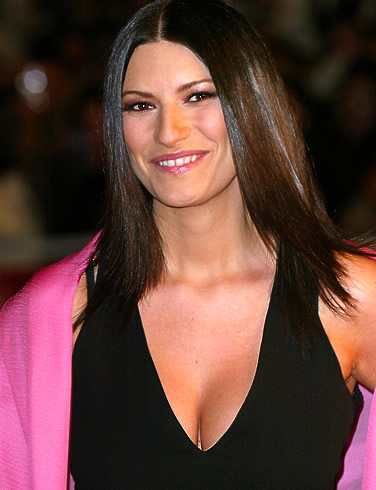
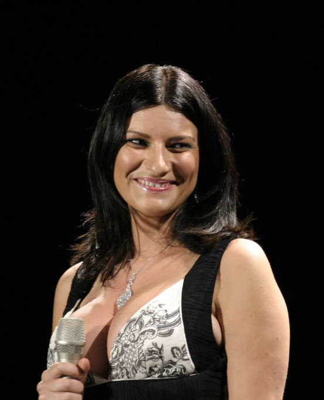
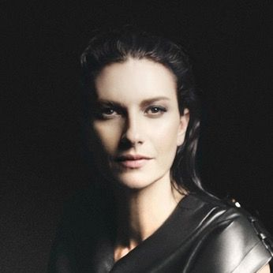
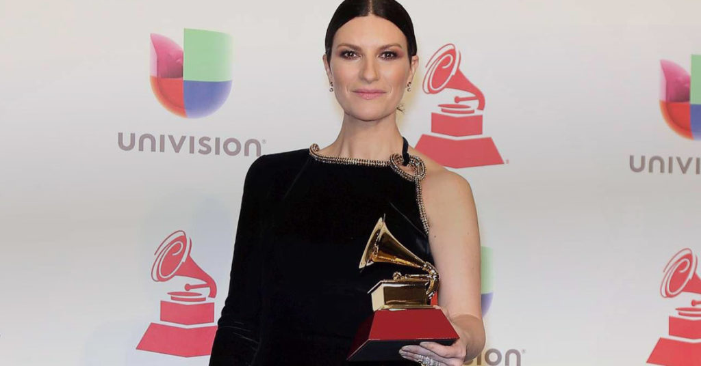

Laura Pausini adı insanın zihninde artık neredeyse fazla tanıdık: “La solitudine”, Sanremo, İspanyolca albümler, Latin Amerika, Grammy, dev turneler ve büyük televizyon programları. Bu kadar uzun süredir gözümüzün önünde olan bir pop yıldızında yeni bir ayrıntı bulmanın zor olduğunu düşünebilirsiniz. “¿PORQUÉ TE VAS?” dosyası ise tam tersini gösteriyor.
1974’ün klasiğini 2025’te ilk kez duydu.
Bu tesadüf, elli yıllık pop tarihini kişisel hafıza, sinema, dil, internet ve turne kostümleri üzerinden birbirine bağlayan yeni bir Laura Pausini hikâyesine dönüştü.
01THE BEGINNINGLaura Pausini’yi gerçekten ne kadar tanıyoruz?
Laura’nın hikâyesinin başlangıcı, bugün temsil ettiği uluslararası pop yıldızlığından çok daha küçük ölçekte. Romagna’da büyüyen bir çocuk. Babasıyla birlikte piano-bar’larda şarkı söylüyor. Daha on yaşlarındayken babasının aldığı flüte merak salıyor. Onu en çok etkileyen gruplardan biri Jethro Tull; Laura yıllar sonra hâlâ o ilk flütünü kullandığını ve kendi sesindeki orta frekansları bile flütün tonuna benzetmeye çalıştığını anlatıyor.
On iki yaşındayken karşılıksız bir aşk yüzünden uyuyamadığı bir gece ilk şarkısını yazıyor. Bu küçük ayrıntılar, sonradan oluşacak dev kariyerin içinde neredeyse kaybolmuş durumda. Ama Laura Pausini’nin karakterini anlamak için önemli. Çünkü kariyerinin başından beri yaptığı şey yalnızca iyi şarkı söylemek değil. Kendisini yeniden konumlandırmak.
02SANREMO 1993Bir gecede bütün İtalya’nın tanıdığı kız
Laura Pausini henüz 18 yaşında. Sanremo Festivali’nin genç sanatçılar bölümü Nuove Proposte’de “La solitudine”yi söylüyor. Ve kazanıyor.
Sonrası gerçekten klişe anlamda “bir gecede değişen hayat”. Bir gün önce piano-bar dünyasından gelen genç bir şarkıcı. Bir gün sonra İtalya’nın konuştuğu yeni ses. Bir yıl sonra bu kez Sanremo’nun büyük isimler kategorisine “Strani amori” ile dönüyor ve üçüncü oluyor.
THE ORIGIN POINTGrammy, Golden Globe, Latin Grammy ve stadyumlar gelecek. Ama Laura’ya göre hiçbir ödül 1993 Sanremo gecesinin anlamını geçmeyecek.
Çünkü geri kalan her şey orada başlıyor.
03THE GAMBLEİspanyolca kariyer aslında küçük bir restle başladı
Laura Pausini’nin bugün Latin Amerika ve İspanya’yla ilişkisi o kadar doğal görünüyor ki, bunun başta alınmış riskli bir karar olduğunu unutmak kolay. 1994 civarında Warner Spain ona basit bir teklif götürüyor: “La solitudine”yi İspanyolca kaydet.
Laura’nın cevabı ise beklenenden daha iddialı: Tek şarkı olmaz. Bütün albümü İspanyolca yaparsam yaparım. Şirket kabul ediyor. Laura telaffuz çalışıyor. İspanyolca repertuvarını yeniden kaydediyor. Ve Madrid’e geldiğinde tuhaf bir şey fark ediyor: insanlar yalnızca şarkısını tanımıyor, sözleri ezbere biliyorlar.
Bu karar kariyerinin yönünü değiştiriyor. İtalyan pop yıldızı Laura Pausini’nin yanında ikinci bir Laura doğuyor: İspanyolca konuşan dünyanın kendisine neredeyse kendi sanatçısı gibi sahiplendiği Laura.


04THE SCALESonra milestone’lar absürt bir hızla birikmeye başlıyor
2006’da Escucha ile Grammy kazanıyor. Bu onu Grammy kazanan ilk İtalyan kadın sanatçı yapıyor. 2007’de San Siro’da başrol konser veren ilk kadın oluyor. 2016’da İtalya’da bir kadın sanatçının gerçekleştirdiği ilk stadyum turnelerinden birini yapıyor. 2018’de Circo Massimo’da konser veren ilk kadın sanatçı oluyor.
2021’de “Io sì (Seen)” ile Golden Globe kazanıyor. Aynı şarkı Academy Awards’da Best Original Song dalında Oscar adaylığı alıyor. 2023’te Latin Recording Academy tarafından Person of the Year seçiliyor; bu unvanı alan ilk Avrupalı kadın oluyor. Kariyer satışları 70 milyonun üzerine çıkıyor.
Eylül 2026 dijital snapshot’ında ise yaklaşık 12,8 milyon aylık Spotify dinleyicisi, 3,2 milyon Spotify takipçisi, 1,7 milyon YouTube abonesi ve yaklaşık 5,8 milyon Instagram takipçisi ölçeğinde. 1993 Sanremo kazananının 33 yıl sonra hâlâ global streaming dünyasında milyonlarca insana ulaşması, kendi başına az rastlanan bir pop kariyeri.
Ama Laura Pausini hikâyesini ilginç yapan yalnız başarı listesi değil. Bazen kontrolün dışına çıkan anlar.
05LIMA 2014Bir sabahlık ve internete kalan tek cümle
2014’te Lima konserinde sahne kostümüyle ilgili bir problem yaşanıyor. Üzerindeki sabahlık açılıyor. Görüntü internete düşüyor. Bir anda dünyanın konuştuğu şey Laura Pausini’nin müziği değil, sahnedeki kostüm kazası.
THE VIRAL LINE“Si han visto, han visto… la tengo como todas.”
Kabaca: “Gördülerse gördüler… herkeste ne varsa bende de o var.” Daha sonra bunun kasıtlı bir publicity stunt olduğu iddialarına sinirleniyor ve olayın tamamen kostüm kazası olduğunu açıklıyor.
Ama sahnedeki ilk tepkisi Pausini’nin kamu karakterini kusursuz biçimde özetliyor. Kriz. Utanç ihtimali. Ve saniyeler içinde espriye çevirme. Steril diva refleksi değil. Daha çok: “Oldu artık. Devam ediyoruz.”
06UNFILTEREDLaura’nın ağzı bazen kariyer ekibinden hızlı çalışıyor
Pausini’nin televizyon kariyerinde onu diğer büyük pop yıldızlarından ayıran şeylerden biri de kontrolü fazla seviyor gibi görünmemesi. Röportajlarda serveti üzerine şaka yapabiliyor. Kendisiyle dalga geçebiliyor. Konuşurken kurumsal PR filtresi bazen yetişemiyor.
Bu özelliği zaman zaman başını belaya da sokuyor. 2022’de İspanyol televizyon programı El Hormiguero’da kendisinden “Bella Ciao” söylemesi istendiğinde reddediyor. Gerekçesi şarkının politik çağrışımlar taşıması ve kendisinin siyasi propaganda amacıyla kullanılmak istememesi. Bu açıklama İtalya ve İspanya’da ciddi tepki yaratıyor.
Buradaki mesele “Laura haklı mıydı?” değil. Daha ilginç olan, kariyeri boyunca oldukça geniş ve heterojen bir uluslararası dinleyiciye seslenen bir yıldızın parti-politik kimlikle ilişkilendirilmekten ne kadar bilinçli biçimde kaçınmaya çalıştığının görünür olması.
07POP FEUDVe 2026’da hâlâ pop kavgasının ortasında
Bir yıldızın gerçekten hâlâ güncel olup olmadığını anlamanın yollarından biri şudur: hâlâ kiminle kavga ediyor?
Laura için 2025–26 cevabı: Gianluca Grignani. Yo Canto 2 projesinde Grignani’nin “La mia storia tra le dita” şarkısını yeniden yorumlamak istiyor. İlk sosyal medya duyurusunda Grignani’ye yeterince görünür kredi verilmediği eleştirileri çıkıyor. Sonra mesele daha ciddi hale geliyor.
Grignani ve ortak yazar Massimo Luca, Pausini versiyonundaki bazı söz değişikliklerinin eserin anlamını değiştirdiğini savunuyor ve hukuki itirazda bulunuyor. Pausini tarafı gerekli izinlerin alındığını söylüyor. Karşı taraf buna itiraz ediyor. Sonuç: İtalyanca versiyon Io Canto 2’den çıkarılıyor. İspanyolca ve Portekizce yorumlar ise projede kalıyor.
Sanremo 2026’da Grignani sahnede çiçekleri aldıktan sonra Carlo Conti’ye “Üzerinde Laura Pausini’nin numarası da var mı? Arayayım.” diye laf atıyor. Laura ertesi gün basın toplantısında karşılık veriyor: numarası onda zaten var. Hiç değiştirmedi. Ne istiyorsa arasın.
Otuz yılı aşkın kariyer. Grammy. Oscar adaylığı. Stadyumlar. Ve hâlâ Sanremo kulisinde telefon numarası üzerinden atışma. Pop yıldızlığı biraz da bu.
08PRIVATE LIFEHerkes yemeğe geldi, düğüne düştü
Laura’nın uzun yıllardır gitaristi ve yaratıcı ortağı olan Paolo Carta, aynı zamanda hayat arkadaşı. İlişkileri yaklaşık 18 yıl sürdükten sonra 2023’te evlenmeye karar veriyorlar. Ama klasik celebrity wedding yok.
Konuklara Laura’nın 30. kariyer yılı için aile yemeği yapılacağı söyleniyor. İnsanlar eve geliyor. Ve düğün olduğunu öğreniyor. Kızları Paola yüzükleri getiriyor. Laura ile Paolo ise yemin yerine kendi yazdıkları, o sırada yayımlanmamış “Davanti a noi” adlı şarkıyı kullanıyor.
Pausini dünyasının romantizmi tam olarak böyle çalışıyor: çok büyük kariyer, çok küçük düğün.
09IMAGE CONTROLLaura neden yıllarca yelek giydi?
1990’lar Laura Pausini fotoğraflarına bakınca bir styling paterni hemen fark edilir. Yelekler. Gömlekler. Daha kapalı, bazen androjen siluetler. Bu tesadüf değil.
Pausini, kariyerinin başlarında kendisini bir sex symbol olarak pazarlatmak istemediğini açıkça anlatıyor. Mesajı kabaca: Önce sesimi dinleyin.
Yıllar içinde Armani, Gucci, Versace gibi moda evleriyle çalışacak; kırmızı halı figürüne dönüşacak. Ama ilk Laura imajı bilinçli biçimde “vücudu değil sesi öne çıkarma” üzerine kurulu. Bu ayrıntı, 2026 “¿Por qué te vas?” videosundaki teatral moda kullanımını da daha ilginç hale getiriyor. Çünkü artık kıyafet saklanmak için değil. Karakter yaratmak için kullanılıyor.
10FULL CIRCLESanremo onu yarattı; Eurovision onu ev sahibi yaptı
Laura hiçbir zaman Eurovision yarışmacısı olmadı. Ama Eurovision bağlantısı bundan daha güçlü. 2022’de Torino’daki Eurovision Song Contest’i Mika ve Alessandro Cattelan ile birlikte sundu. Final gecesinde kendi kariyerinden parçaları içeren bir medley yaptı.
Nuove Proposte kazananı.
Torino finalinin ev sahibi.
Carlo Conti ile beş gece co-host.
Aynı sahne, tamamen başka rol.
İşin güzel tarafı, bu rol ona yaklaşık 15 yıl önce de teklif edilmiş. Kabul etmemiş. Kendisini hazır hissetmemiş. 2026 teklifi geldiğinde eski Sanremo patronu Pippo Baudo’yu aradığını anlatıyor. Baudo’nun cevabı kabaca: “Daha neyi bekliyorsun? Artık hazırsın.”
Ariston sahnesinin kendisini hâlâ ne kadar strese soktuğunu anlatırken Laura’nın “Lexotan” üzerinden şaka yapması ise tipik Pausini. 33 yıllık kariyer bile Sanremo sinirini tamamen öldürmemiş.
11THE DISCOVERYVe bütün bunlardan sonra inanılması güç cümle geliyor
Laura Pausini otuz yılı aşkın süredir İspanyolca şarkı söylüyor. İspanya’da onlarca kez konser verdi. Latin Amerika’nın en büyük yıldızlarından biri. Ve “Por qué te vas”ı 2025’e kadar hiç duymamış.
Hikâyenin tuhaf güzelliği burada. Yo Canto 2 hazırlanırken Madrid’de yaşayan bir arkadaşıyla konuşuyor. Arkadaşı ona çocukluk yıllarında İspanya’da her yerde çalan bir şarkıdan söz ediyor: Jeanette. “Por qué te vas.” Laura dinliyor. Ve tutuluyor.
Sonra ikinci ayrıntıyı öğreniyor. Şarkı: 1974. Laura Pausini’nin doğduğu yıl. Bu küçük tarih çakışması şarkıyla arasında kişisel bir bağ yaratıyor. Bir demo kaydediyor. Demo giderek gerçek kayda dönüşüyor. Laura daha sonra “Por qué te vas”ı kendisine parçayı keşfettiren Madridli arkadaşına adıyor.

12THE ORIGINAL1974’te gerçekten ne olmuştu?
Orijinal şarkının yazarı José Luis Perales. O sırada bugün bildiğimiz büyük singer-songwriter figüründen çok daha erken kariyerinde. Başka sanatçılar için şarkılar yazmaya çalışan genç bir besteci.
Kendi anlatımına göre “Por qué te vas”ı Castejón’daki kır evinde yağmurlu bir öğleden sonra yazıyor. Bazı anlatılar birkaç saatten söz ediyor. Perales melodiyi doğrudan Jeanette’in sesi için düşünüyor. Jeanette’in ince, kırılgan, neredeyse çocuksu tınısı şarkının bütün kimliğini belirliyor.
Ve sonra beklenmedik bir şey oluyor. Hiçbir şey. Şarkı ilk çıktığında büyük hit olmuyor.
13THE MYTHJeanette şarkıyı gerçekten sevmemiş miydi?
“Por qué te vas” tarihinin küçük mitlerinden biri, Jeanette’in şarkıyı ilk başta istemediği iddiası. José Luis Perales’in bazı eski anlatılarında buna benzer bir hikâye geçiyor.
Jeanette ise daha sonra bunu açıkça düzeltiyor. Şarkıyı ilk dinlediğinde sevdiğini. Hızlı biçimde kaydettiğini. Dolayısıyla burada iki birinci-el anlatı tam olarak uyuşmuyor.
14THE FILMŞarkıyı Jeanette değil, Carlos Saura ölümsüzleştirdi
1974’te mütevazı kalan kayıt birkaç yıl sonra başka bir sanat formuna giriyor. Yönetmen Carlos Saura, şarkıyı radyoda duyuyor. Ve Cría cuervos filmine koyuyor.
Film 1975’te çekiliyor, 1976’da uluslararası dolaşıma giriyor ve Cannes’da büyük ilgi görüyor. Ana Torrent’in canlandırdığı Ana’nın pikabından Jeanette çalıyor. Ve “Por qué te vas” artık yalnız pop single değil. Filmin çocukluk, ölüm, hafıza, kayıp ve yetişkinlerin dünyasına karşı kurulmuş o tekinsiz bakışının parçası.
İşin estetik güzelliği burada. Şarkının müziği hafif. Neredeyse neşeli. Sözler ayrılık ve terk edilme üzerine. Saura bunu karanlık bir filme yerleştiriyor. Ortaya çok daha derin bir kontrast çıkıyor.
15THE EXPLOSIONVe sonra Avrupa deliriyor
Cría cuervos sonrasında şarkı yeniden yayıldığında sonuç tamamen farklı. Jeanette’in imza şarkısı oluyor. Ve Perales’in kariyerini de değiştiriyor. “Por qué te vas” zamanla onun en çok coverlanan bestelerinden birine dönüşüyor.
Bir film şarkıyı kurtarıyor. Şarkı besteciyi büyütüyor. Besteci sonraki onlarca yıl boyunca İspanyol pop tarihinin temel isimlerinden biri oluyor. Pop tarihinin zincirleme reaksiyonu.
16THE OTHER WOMANJeanette de aslında “İspanyol pop yıldızı” klişesine tam uymuyor
Jeanette Anne Dimech: 1951 Londra doğumlu. Annesi Kanarya Adaları kökenli. Babası Belçika Kongosu’nda doğmuş. Çocukluğu İngiltere ve ABD bağlantılı. Sonra İspanya popunun en sembolik seslerinden biri haline geliyor.
Bu kozmopolit biyografi, 1970’ler İspanya’sında onu zaten alışılmadık bir figür yapıyor. Ve Laura ile burada güzel bir paralellik oluşuyor.
TWO CULTURAL CROSSINGSJeanette: İspanya dışından gelip İspanyol popunun simgesi. Laura: İtalya’dan gelip İspanyolca müzik dünyasının kendi yıldızlarından biri.
2026 cover’ında aslında iki farklı kuşağın iki kültürlerarası kadın pop figürü karşılaşıyor.
17THE TITLEBaşlığın kendisi bile yarım yüzyıldır kavga ediyor
Orijinal plaklarda şarkı çoğunlukla “Porque te vas” şeklinde yazılıyor. Bu İspanyolcada “çünkü gidiyorsun” gibi okunabilir. Ama Jeanette 2025’te, kendisinin de yıllarca emin olmadığını ve sonunda Perales’e sorduğunu anlatıyor. Perales’in ona göre kastettiği şey bir soru: “Neden gidiyorsun?” Yani: ¿Por qué te vas?
İşin daha komik tarafı Laura Pausini’nin DSP başlığı: ¿PORQUÉ TE VAS? Tek kelime. Standart İspanyolcada doğrudan soru için doğru biçim por qué. Tek kelimelik porqué ise isimdir; “sebep / neden” gibi.
Dolayısıyla elli yıllık şarkının yalnız melodisi değil: başlığının grameri bile yaşayan bir pop-kültür nesnesine dönüşmüş durumda.
18THE REBUILDLaura şarkıyı 2026’ya nasıl taşıdı?
Buradaki en riskli karar: reggaetón. Pausini orijinali aynen kopyalamak istemiyor. Ama 70’ler karakterini de öldürmek istemiyor. Paolo Carta ona eski dönem gitarlarını çağrıştıran bir düzenleme hazırlıyor. Altına ise modern Latin-pop / reggaetón ritmi geliyor.
Laura’nın ilk tepkisi? Pek sıcak değil. Reggaetón kendi doğal alanı değil. Bu ritmin üzerinde şarkı söylemek istediğinden emin değil. Başka beat’ler deneniyor. Sonra ekip şaşırtıcı bir şey fark ediyor: Jeanette versiyonunun metrik yapısı ve timing’i en doğal biçimde bu ritme oturuyor. Laura da sonunda bunu kabul ediyor.
Jeanette versiyonunun melodik hafızası.
60’lar / 70’ler hissini çağıran doku.
2026 Latin-pop ritmik zemini.
Daha güçlü, daha yetişkin dramatik yorum.
Bazı eski dinleyiciler bunu sevmedi. Laura da tepki geleceğini zaten biliyordu. Ama onun için önemli olan şeylerden biri: Jeanette’in beğenmesi.
19THE CREDITSCover sanıldığından daha “band” işi
Şarkının söz ve bestesinde hâlâ yalnızca José Luis Perales Morillas. Laura şarkıyı yeniden yazmıyor. Prodüksiyon ve düzenleme Laura Pausini + Paolo Carta.
Yeni versiyonun ana yaratıcı çerçevesi.
Carta ayrıca programming üstleniyor.
Bas, davul ve perküsyon.
Piyano, klavye ve programming.
Geri vokallerde David Blank, Giorgia Galassi, Josbel Figurita, Roberta Granà, Tahnee Rodriguez ve Ernesto López Maturell. Mix: Paolo Carta + Renato Cantele. Mastering: Carta, Cantele ve Nicola Fantozzi.
Pausini versiyonu yaklaşık 3:02–3:03. Jeanette kaydı ise yaklaşık 3:21.
20THE VIDEOKırmızı çizmeler neden bu kadar önemli?
Klipte Laura: kısa siyah bob peruk, siyah-beyaz-kırmızı geometrik kıyafet, parlak uzun kırmızı çizmeler, kırmızı yuvarlak koltuk. Tam bir 1970’ler televizyon-variety-show estetiği.
Klibi Laura Pausini ve Luca Tommassini birlikte yazıp yönetiyor. Tommassini edit tarafında da çalışıyor. Görüntü yönetmeni Edmondo Angelelli. Koreografi Gianmaria Giuliattini. Styling Monica Serani. Set design Chiara Porfido.
Ama önemli olan Jeanette cosplay’i yapılmaması. Laura Jeanette’i birebir canlandırmaya çalışmıyor. Daha çok: 1974 fikrini oynuyor. Müzik 1974’ü 2026’ya getirirken klip tersine gidiyor: 2026 Laura Pausini’yi 1974’e gönderiyor.

21THE GLOVESSonra annesinin dolabından kırmızı eldivenler çıkıyor
Görsel hikâye turnede devam ediyor. “Por qué te vas” öncesinde Laura’ya sahnede peruk, vintage ceket, güneş gözlükleri ve kırmızı eldivenler getiriliyor. Eldivenlerin hikâyesi ise stilistin moodboard’undan çıkmıyor.
Laura’nın annesi çocukluğunda gerçekten bu kırmızı eldivenleri kullanmış. Laura annesinin hâlâ sakladığını öğrenince onları turneye yanında götürüyor.
22THE MEETINGVe Jeanette sonunda sahneye geliyor
Laura Mart 2026’da henüz Jeanette ile birlikte söylememişken bunu açıkça istiyor. Jeanette’in cover’ı sevdiğini biliyor. Bu ona güven veriyor.
Sonra: 6 Nisan 2026. Madrid. Movistar Arena. Jeanette sürpriz konuk olarak sahneye çıkıyor. İki kadın “Por qué te vas”ı birlikte söylüyor. Laura 70’ler kostümünü çıkarıyor. Jeanette’e sarılıyor. Cover’ı ilk duyduğunda ne düşündüğünü soruyor. Jeanette olumlu tepkisini anlatıyor.
Ve Laura hemen yeni bir fikir atıyor: şimdi bunu İtalyanca söylemek gerek.
Laura şarkıyı Madridli arkadaşından keşfediyor.
Yeni kayıt yayımlanıyor.
Orijinal yorumcu yeni versiyonu beğeniyor.
1974 ile 2026 aynı sahnede.
23THE ALBUMBütün bunlar neden Yo Canto 2 içinde?
Laura 2024 sonunda turnesini bitirirken kendisine bir yıl ara vereceğine söz vermiş. Yaklaşık bir hafta dayanıyor. Evde YouTube’dan meslektaşlarının karaoke altyapılarını açıp şarkı söylemeye başlıyor. Ve yeni bir cover albümü yapmak istediğini fark ediyor.
2006’daki ilk Io canto / Yo canto projesinin mantığı şuydu: Laura’yı büyüten İtalyan şarkı yazarlarını İspanyolca dünyaya taşımak. 2026’da fikir tersine dönüyor. Aradan geçen yirmi yılda Laura hayatının büyük bölümünü İspanya ve Latin Amerika’da geçirmiş. Kendisini biçimlendiren şarkıların artık önemli kısmı İspanyolca.
Bu nedenle IO CANTO 2 ve YO CANTO 2 aynı albümün çeviri versiyonları değil. İki kardeş ama büyük ölçüde farklı repertuvarlardan oluşan proje. İspanyolca albümde Jeanette’in yanında Mecano, Fito Páez, Natalia Lafourcade, Shakira, Alejandro Sanz, Juan Luis Guerra, Violeta Parra, Bad Bunny, Gianluca Grignani ve başka isimler var.
“Por qué te vas” bu büyük haritanın içinde doğrudan: İspanya + 1970’ler hafızası.
24THE TRACKLISTAlbümde nerede duruyor?
Single Mart 2026’da geliyor. Albüm birkaç gün sonra yayımlanıyor. İspanya resmî albüm listesine 5 numaradan giriyor. Vinyl listesinde 3 numara. Bir cover projesi için küçümsenmeyecek bir performans.
Ama Laura için mesele yalnız chart değil. Albümün temel fikri: “Bunlar artık benim hayatımın şarkıları.”
25THE AFTERLIFE“Por qué te vas” zaten Laura gelmeden önce de ölmeyi reddeden bir şarkıydı
Şarkının elli yıllık hayatında onlarca cover var. Carla Bruni 2020’de yorumluyor. La Oreja de Van Gogh / Amaia Montero çevresinde yeniden dolaşıyor. Lucero söylüyor. Farklı ülkelerde farklı dillerde tekrar tekrar kaydediliyor.
Ve sonra internet devreye giriyor. 2024 civarında Jeanette kaydı, Snoop Dogg’un “Drop It Like It’s Hot” parçasıyla birleştirilmiş gayriresmî bir mashup sayesinde yeniden viral oluyor. Bu resmî Jeanette–Snoop Dogg işbirliği değil. Tito Silva Music tarafından hazırlanmış bir mashup. Ama büyük yüklemelerinden biri 14 milyonun üzerinde görüntülenmeye ulaşıyor. Jeanette de yeni viral hayatın farkında olduğunu söylüyor.
Bu nedenle Laura Pausini 2026’da unutulmuş bir şarkıyı diriltmiyor. Aksine sürekli biçim değiştiren bir organizmaya ekleniyor:
Jeanette’in ilk kaydı.
Cría cuervos ile kültürel dönüşüm.
Tito Silva Music ve viral dolaşım.
Reggaetónlu yeni nesil yorum.
26THE LAST WORDElli iki yıllık bir şarkının hafızası
Bütün ayrıntıları yan yana koyunca “¿PORQUÉ TE VAS?” başka türlü duyulmaya başlıyor.
José Luis Perales yağmurlu bir öğleden sonra şarkıyı yazıyor. Jeanette kaydediyor. İlk yayımlandığında büyük bir şey olmuyor. Carlos Saura radyoda duyuyor. Bir filme koyuyor. Film Cannes’a gidiyor. Avrupa şarkıya âşık oluyor. Jeanette’in kariyeri değişiyor. Perales’in kariyeri büyüyor. Şarkı onlarca kez coverlanıyor. Başlığının nasıl yazılması gerektiği bile yarım yüzyıl boyunca tartışılıyor. Snoop Dogg mashup’ına dönüşüyor.
Sonra İtalya’da doğmuş ve otuz yıldır İspanyolca dünyasının en büyük yıldızlarından biri olmuş bir kadın şarkıyı ilk kez 2025’te duyuyor. Üstelik kendi doğduğu yılın şarkısı. İlk başta reggaetón fikrinden hoşlanmıyor. Sonra kaydediyor. 70’ler kıyafetlerini giyiyor. Annesinin eski kırmızı eldivenlerini sahneye taşıyor. Jeanette cover’ı seviyor. Ve 2026 Madrid’inde iki kadın yan yana duruyor: biri şarkıyı 1974’te tarihe geçirmiş, diğeri 52 yıl sonra yeniden kaydetmiş.
Aralarında 23 yaş var. Kayıtların arasında 52 yıl. Ama ortada hâlâ aynı soru: ¿Por qué te vas?
Belki de bazı pop şarkılarının en büyük başarısı listelerde kaç hafta kaldıkları değildir. Kendilerini söyleyen insanlardan daha uzun yaşayabilmeleridir.
Yazan ISC Editorial · Yayın: 19 Eylül 2026
Kaynakça & Further Reading 28 kaynak · tıklayarak aç / kapat
- GRAMMY.com — Laura Pausini interviews & career profiles.Çocukluğu, flüt/Jethro Tull bağlantısı, Grammy kilometre taşları, kariyer satışları ve Latin Recording Academy Person of the Year bağlamı.
- RAI / Sanremo archives.1993 “La solitudine” zaferi, 1994 “Strani amori” dönemi ve Pausini’nin Sanremo ile süren ilişkisi.
- Billboard Italia — Laura Pausini interview.Warner Spain, İspanyolca albüm kararının ortaya çıkışı ve Latin kariyerinin başlangıcı.
- ANSA — Eurovision 2022.Laura Pausini, Mika ve Alessandro Cattelan’ın Torino Eurovision Song Contest sunuculuğu.
- ANSA — Sanremo 2026.Carlo Conti ile co-host dönemi, Pippo Baudo görüşmesi ve Laura’nın Ariston sahnesiyle ilişkisi.
- La Vanguardia — Lima 2014.Sahne kostümü kazası, viral cümle ve Pausini’nin olayın publicity stunt olmadığına ilişkin açıklaması.
- El País — Laura Pausini profiles.Pausini’nin televizyon/personality tarafı ve erken dönem imajında sex-symbol pazarlamasına direnmesi.
- ANSA — “Bella Ciao” controversy, 2022.Pausini’nin şarkıyı siyasi içerikle ilişkilendirdiği için söylemeyi reddetmesi ve ardından gelen tartışma.
- Rolling Stone Italia — Gianluca Grignani dispute.“La mia storia tra le dita” cover’ı, attribution ve lyric değişikliklerine ilişkin hukuki anlaşmazlık.
- ANSA — Sanremo 2026 / Grignani–Pausini exchange.Telefon numarası üzerinden gerçekleşen sahne arkası söz düellosu.
- ANSA Lifestyle — Pausini & Paolo Carta wedding.2023 gizli düğünü, konukların sürprizi, Paola ve “Davanti a noi”.
- Europa FM / Europa Press — Yo Canto 2 interviews.Laura’nın “Por qué te vas”ı 2025’te ilk kez keşfetmesi, Madridli arkadaş bağlantısı, 1974 tesadüfü ve şarkıyı arkadaşına adaması.
- EFE — Laura Pausini / Yo Canto 2.Paolo Carta ile düzenleme süreci, retro gitarlar, reggaetón ritmi ve Laura’nın ilk tereddütleri.
- Warner / official YouTube credits.“¿PORQUÉ TE VAS?” José Luis Perales songwriting kredisi, Laura Pausini–Paolo Carta prodüksiyonu, müzisyenler, mix ve mastering ekibi.
- Official video credits.Laura Pausini ve Luca Tommassini yönetimi; Edmondo Angelelli, Gianmaria Giuliattini, Monica Serani ve Chiara Porfido’nun yaratıcı rolleri.
- Billboard España — Madrid live show.Pausini’nin annesinden kalan kırmızı eldivenler ve 70’ler sahne kostümü.
- LOS40 — Madrid Movistar Arena, 6 April 2026.Jeanette’in sürpriz sahne katılımı ve iki sanatçının “Por qué te vas” düeti.
- José Luis Perales interviews / El Confidencial.Şarkının Castejón’da yazılması, Jeanette için düşünülmesi ve parçanın Perales kariyerindeki etkisi.
- Jeanette interviews / Glamour España / EFE.Jeanette’in şarkıyı ilk başta sevmediği efsanesine verdiği yanıt, başlığın anlamına ilişkin Perales’le yaptığı konuşma ve kişisel biyografisi.
- RTVE — “Por qué te vas” / Cría cuervos.Carlos Saura’nın şarkıyı keşfetmesi, filmdeki kullanımı ve parçanın kültürel dönüşümü.
- European chart archives / Ultratop.Almanya, Valonya, İsviçre ve diğer Avrupa pazarlarındaki chart performansı.
- RAE usage guidance.“Por qué / porque / porqué” ayrımı ve Pausini dijital başlığındaki dilbilgisel stilizasyon.
- Europa Press — Yo Canto 2 conception.2024 turnesi sonrası planlanan ara, karaoke üzerinden cover projesinin ortaya çıkışı ve Io Canto 2 / Yo Canto 2 ayrımı.
- Spotify / Apple Music / MusicBrainz — Yo Canto 2 metadata.19 parçalık albüm, “¿PORQUÉ TE VAS?”ın 10. sıradaki konumu ve yaklaşık 3:02–3:03 süresi.
- Spanish album chart archives.Yo Canto 2’nin albüm listesine 5, vinyl listesine 3 numaradan girişi.
- RTVE — cover history.Carla Bruni dahil şarkının uzun cover geçmişi.
- Tito Silva Music / YouTube — Jeanette × Snoop Dogg mashup.2020’lerin internet dönemindeki yeni viral yaşam.
- Chartmetric snapshot, September 2026.Laura Pausini’nin Spotify, YouTube ve Instagram ölçeği.
Editoryal not: “Porque te vas / ¿Por qué te vas?” başlığının anlamına ilişkin tarihsel kaynaklarda farklı kullanımlar bulunuyor. Jeanette’in 2025 tarihli anlatısı Perales’in başlığı soru olarak düşündüğünü aktarıyor; orijinal plakların büyük bölümünde ise “Porque te vas” biçimi kullanılmıştır. Pausini’nin “¿PORQUÉ TE VAS?” yazımı resmî dijital metadata’daki biçimdir. Dinleyici ve sosyal medya rakamları Eylül 2026 tarihli snapshot’lardır ve canlı sayaç olarak değerlendirilmemelidir. “Bella Ciao” ve Grignani tartışmaları, Pausini ve ilgili tarafların kamuya açık açıklamalarına atıfla aktarılmış; herhangi bir siyasi ya da hukuki hüküm verilmemiştir.